Ilmarise tee 46
Üksikelamu, Metsanurme küla, Saku vald. 3D-visualisatsioonid BIM-mudelist (IFC). Sisustus ja haljastus on illustratiivsed.

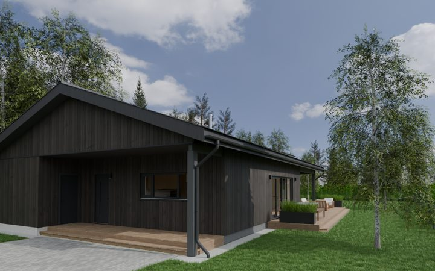
Tänavavaade
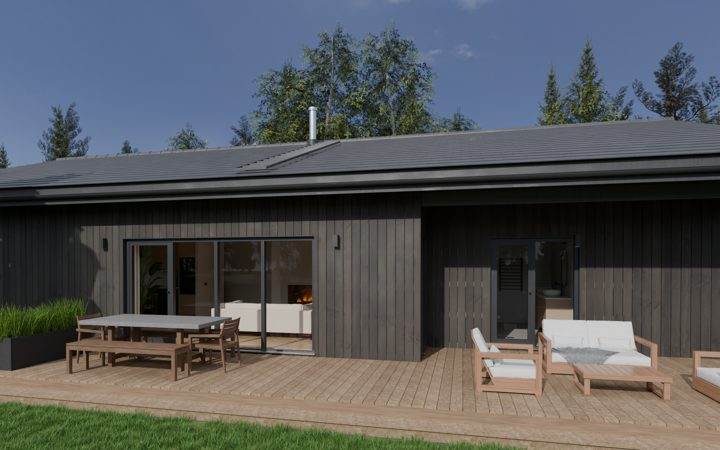
Terrass
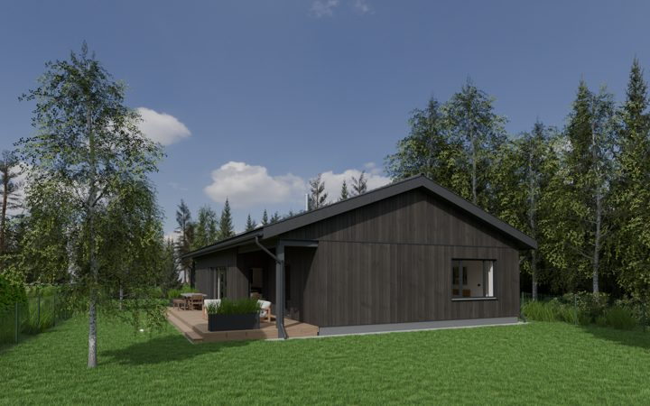
Aed
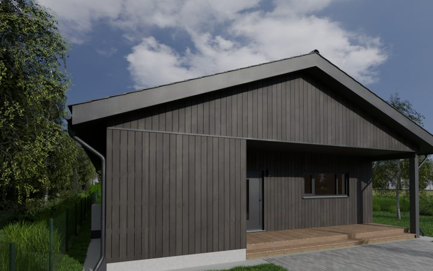
Sissepääs
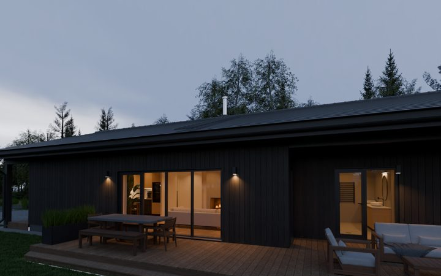
Õhtu
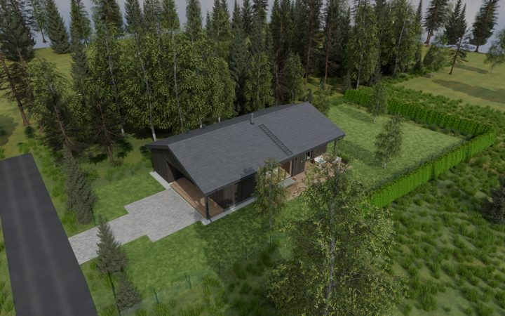
Õhuvaade
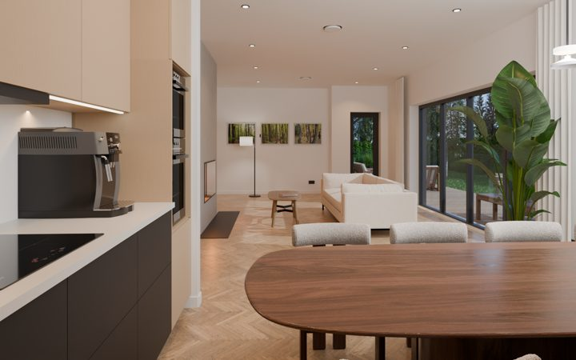
Elutuba
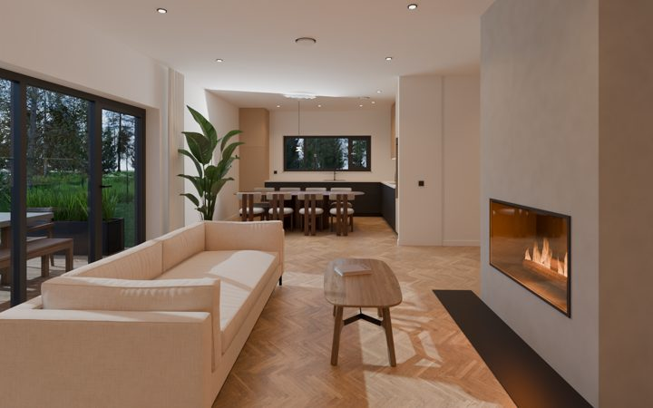
Elutuba ja köök
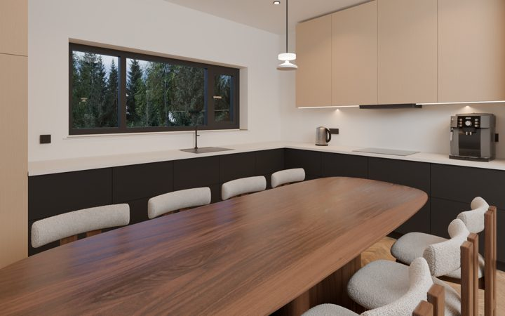
Köök
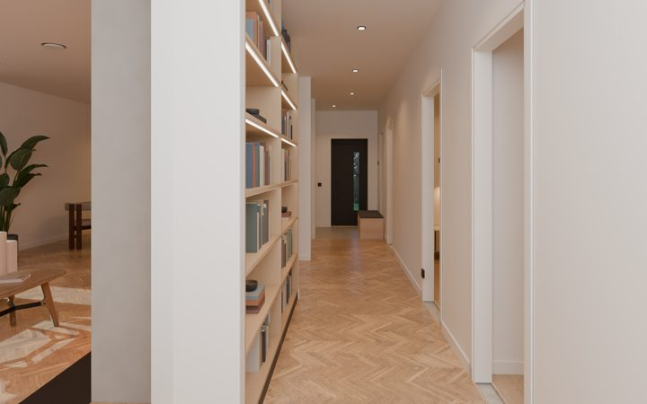
Koridor
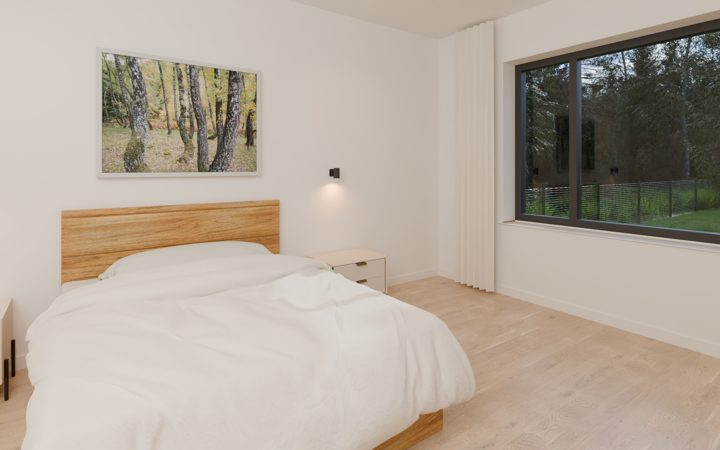
Magamistuba 1
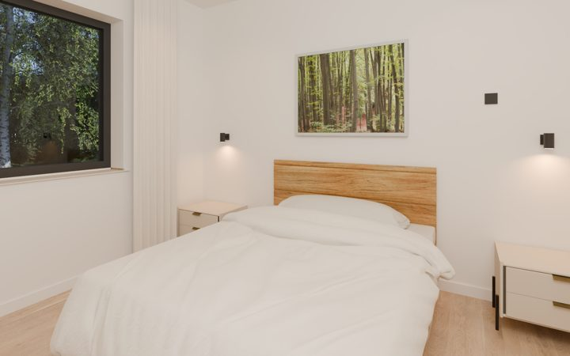
Magamistuba 2
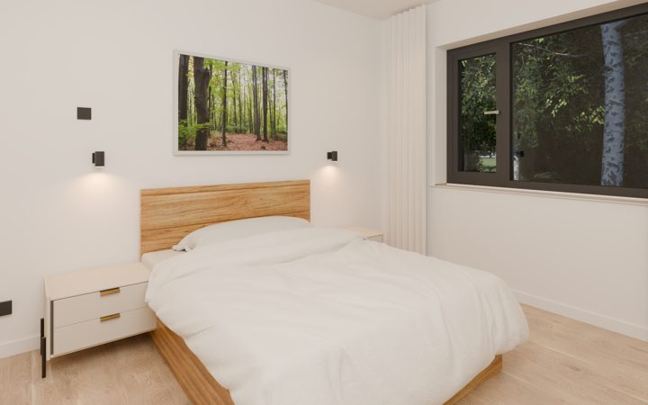
Magamistuba 3
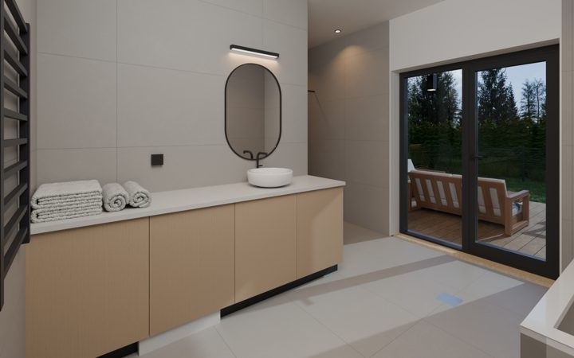
Pesuruum
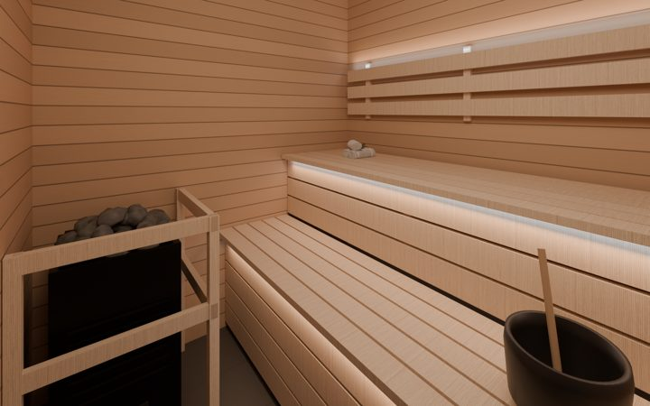
Saun
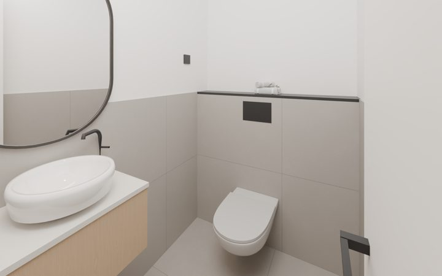
WC
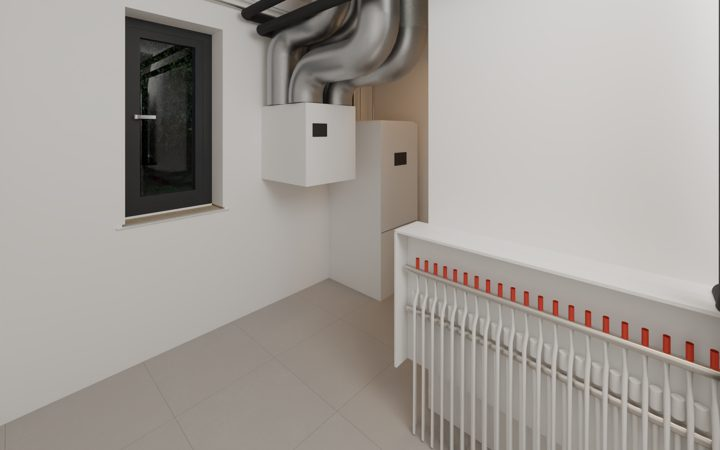
Tehnoruum
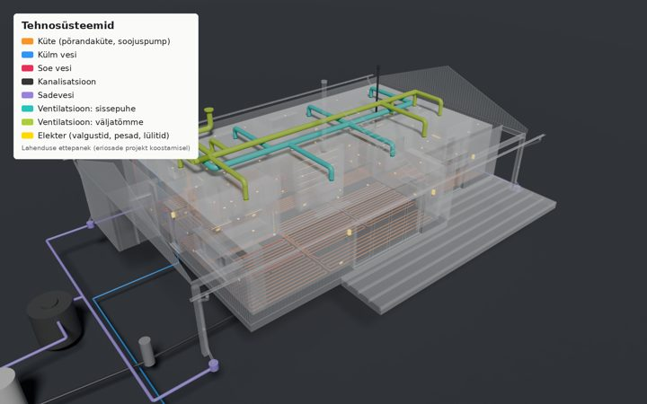
Tehnosüsteemid
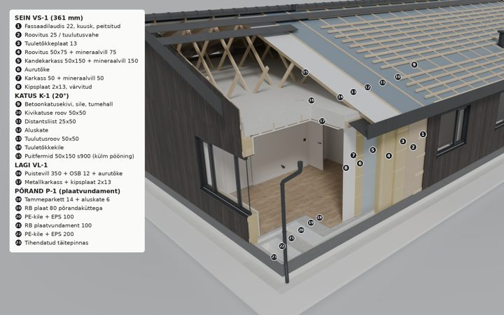
Konstruktsiooni kihidFailid
Kõik pildid täissuuruses (PNG, 1920×1200)194 MB
BIM-mudel (IFC4)5 MB
Blenderi stseen (.blend, Blender 5.2)470 MB
IFC avaneb tasuta vaaturites (nt BIMvision, Solibri Anywhere, Bonsai/Blender). Blenderi fail viitab tekstuuridele ja mööblimudelitele, mida selles failis kaasas pole — geomeetria ja kaamerad avanevad, osa materjale võib olla ilma tekstuurita.